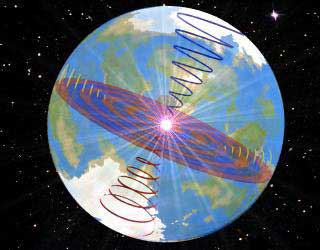

|

Zurück
zur Einführung
Home
/ Free
Sample /
Subscribe
/ English
Version
PLANETARY
VORTEX

CLICK
HERE
to view animation
(size: 605K) Download takes several minutes
Dieser animierte
Planeten Wirbel zeigt Nord- und Sued Wirbel die sich zum
Schwerpunktszentrum hin fokusieren. Jeder Wirbel
implodiert Energie von der Sonne in Richtung dieses
Zentrums und verursacht eine Expansion in Richtung der
Ost - West Richtung. Diese Expansion erfolgt durch eine
nach aussen gerichtete spiralfoermige Bewegung entlang
des Aequators. Die Idee, dass unser Planet wie ein
Stabmagnet ist, ist nicht korrekt. Ein vom Menschen
erzeugter Magnet fokusiert sich vom Zentrum weg zu seinen
Polen, wo, wie in der Natur (wie auch unser Planet) zwei
Pole zusammenkommmen, welche eine Bedingung kreieren, die
man Schwerkraft nennt. Diese zwei zusammentreffenden
Pole, deren Spitzen sich im Erdzentrum befinden werden in
ihrer Interaktion von zwei zusaetzlichen Polen an den
Seiten kontrolliert, die man Ost-West Pole nennt.
Ost-West Pole befinden sich an der sich spiralfoermig
nach aussen bewegenden Energie Scheibe, welche sich am
Aequator befindet. Diese ziehen Nord-Sued Pole zueinander
und, indem sie dies so tuen, ebnen sie den Planet an
seinen Polen aus. -
Zurück
zur Einführung
Home
/ Free
Sample /
Subscribe
/ English
Version
- © Copyright
2000 W. Baumgartner
- VortexScience
- October 2000
|